Rotation
Contents
Rotation#
Rotation in \(\mathbb{R}^3\) is a linear transformation that rotates a set of points by some angle about one of the \(x\), \(y\) or \(z\)-axes. The direction of rotation is assumed to be anti-clockwise when viewed looking down the axis towards the origin (Fig. 34).
{kind=link}
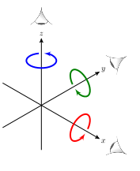
Fig. 34 The direction of rotation is assumed as anti-clockwise when viewed looking towards the origin.#
{kind=link}
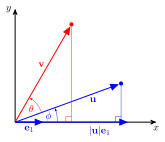
Fig. 35 Rotation of the vector \(\mathbf{u}\) anti-clockwise about the origin.#
Consider the diagram in Fig. 35 that shows the axes from Fig. 34 when viewed looking down the \(x\)-axis. The point with position vector \(\mathbf{u}=(u_x, u_y, u_z)\) is rotated anti-clockwise about the \(x\)-axis by the angle \(\theta\) to \(\mathbf{v}=(v_x, v_y, v_z)\). To determine the linear transformation we first consider the rotation of a vector pointing along the \(x\)-axis which has the same magnitude of \(\mathbf{u}\), i.e., \(|\mathbf{u}| \mathbf{e}_1\), rotated by the angle \(\phi\). Forming a right-angled triangle with the angle \(\phi\) and hypotenuse of length \(|\mathbf{u}|\) then
Doing similar for rotating \(\mathbf{u}\) by the angle \(\theta\) to \(\mathbf{v}\) we have
using the angle sum indentities
then we have
Substituting equation (26) into equation (27)
which can be written as the matrix equation.
The square matrix is the transformation matrix for rotation by the angle \(\theta\) anti-clockwise about the \(x\)-axis. Doing similar we can determine the equivalent matrices for rotating about the \(y\) and \(z\)-axes.
Theorem 8 (Rotation in \(\mathbb{R}^3\))
The rotation of a vector in \(\mathbb{R}^3\) expressed using homogeneous co-ordinates anti-clockwise by an angle \(\theta\) about the \(x\), \(y\) and \(z\) axes is the linear transformation given by the following rotation matrices.
Since \(\cos(-\theta) = \cos(\theta)\) and \(\sin(-\theta) = -\sin(\theta)\), the transformation matrices for inverse rotation, rotation in the clockwise direction, are
Example 26
A triangular polygon has vertices located at \(\mathbf{p}_1 = (4, 0, 1)\), \((\mathbf{p}_2 = (6, 0, 1)\) and \(\mathbf{p}_3 = (5, 0, 3)\). The triangle is rotated by angle \(\theta = \pi/4\) anti-clockwise about the \(y\)-axis. Calculate the positions of the vertices of the rotated triangle.
Solution
The homogeneous co-ordinate matrix is
and the rotation matrix is
Applying the transformation
So the vertex co-ordinates fo the translated triangle are \((3\sqrt{2}, 0, 5\sqrt{2}/2) \approx (2.12, 0, 3.54)\), \((5\sqrt{2}/2, 0, 7\sqrt{2}{2}) \approx (3.54, 0, 4.95)\) and \((\sqrt{2}, 0, 4\sqrt{2}) \approx (1.41, 0, 5.66)\). The original triangle and the translated triangle are plotted below looking along the \(y\) axis.
{kind=link}
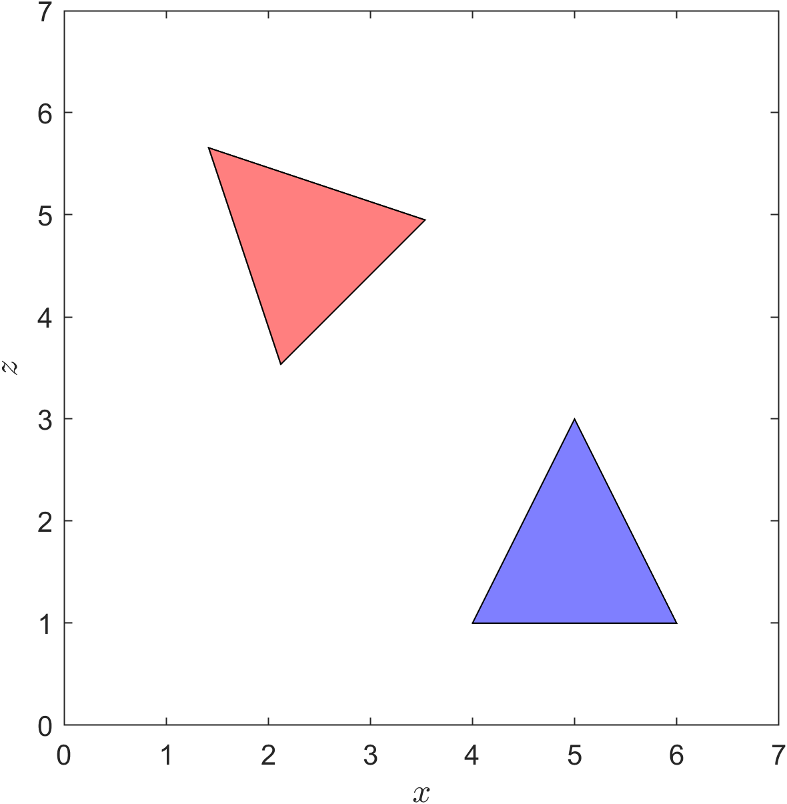
Rotation about polygon centre#
We saw in Example 26 that the polygon has shifted position because we rotate about the origin. If we wanted to rotate the polygon about its centre we first need to translate it so that its centre is at the origin, apply the rotation transformation and then translate the centre to the original position (Fig. 36).
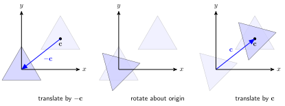
Fig. 36 Steps required to rotate a polygon by its centre.#
If the centre of the polygon is at point \(\mathbf{c}=(c_x, c_y, c_z)\) then the first transformation is translation by \(-\mathbf{c}\) and the transformation matrix is
The second transformation is rotation around the origin using equation rotation-matrix-equation and the third transformation is translation by \(\mathbf{c}\), so that the centre is back to the original position, using
The transformation matrix for the composite transformation that achieves rotation of a polygon about its centre is
where \(R(\theta)\) is either \(R_x(\theta)\), \(R_y(\theta)\) or \(R_z(\theta)\).
Example 27
Rotate the polygon from Example 26 by \(\theta = \pi / 4\) about its centre.
Solution
The homogeneous co-ordinate matrix is
and since the polygon is a triangle the co-ordinates of the centre are the average of the vertices
The individual transformation matrices are
which are multiplied to give the composite transformation matrix
Applying the composite transformation
So the vertices of the rotated polygon are \((5 - \sqrt{2}/6, 0, 5/3 - 5\sqrt{2}/6) \approx (4.76, 0, 0.49)\), \((5 + 5\sqrt{2}/6, 0, 5/3 + \sqrt{2}/6) \approx (6.18, 0, 1.90)\) and \((5 - 2\sqrt{2}/3, 0, 5/3 + 2\sqrt{2}/3) \approx (4.06, 0, 2.61)\). The original polygon and the translated polygon are plotted below looking along the \(y\) axis.
Rotation about a line#
Suppose we wish to rotate \(\mathbb{R}^3\) by an angle \(\theta\) about a general line that passes through the point \(\mathbf{p}=(p_x,p_y,p_z)\) with direction \(\mathbf{d}\) that does not pass through the origin and \(\mathbf{d}=(d_x,d_y,d_z)\) is not parallel to any of the three co-ordinate axes (Fig. 37). To achieve this we first need to apply translation and rotation so that the line lies along one of the co-ordinate axes, preform the rotation about this axis before reversing the rotation and translation operations. Each of the individual transformations can be represented by a matrix so the composite transformation that achieves the rotation about the line is a product of the individual matrices.
{kind=link}
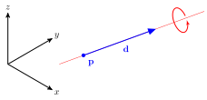
Fig. 37 Rotation about a line.#
The first transformation is to translate by \(-\mathbf{p}\) so that the line passes through the origin so the transformation matrix is
{kind=link}
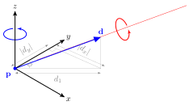
Fig. 38 The line is translated so that \(\mathbf{p}\) is at the origin.#
Fig. 38 shows that affect of translating by \(-\mathbf{p}\). Now we need to rotate the line so that it lies in a plane the contains two of the three co-ordinate axes. If we rotate about the \(z\) axis then the line will be in the \(yz\) plane. The values of \(\cos(\phi)\) and \(\sin(\phi)\) in \(R_z(\phi)\) are
where \(d_1 = \sqrt{d_x^2 + d_y^2}\). The transformation matrix is
{kind=link}
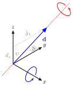
Fig. 39 The line is rotated about the \(z\)-axis so that \(\mathbf{d}\) is in the \(yz\) plane.#
Fig. 39 shows that affect of rotating about the \(z\)-axis. Now we need to rotate about the \(x\) axis so that \(\mathbf{d}\) points along the \(z\) axis. The values of \(\cos(\psi)\) and \(\sin(\psi)\) are
so the transformation matrix is
{kind=link}
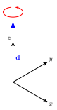
Fig. 40 The line is rotated about the \(x\)-axis so that \(\mathbf{d}\) points along the \(z\) axis.#
Fig. 40 shows that affect of rotating about the \(x\)-axis. Now that the line is pointing along the \(z\)-axis we can perform the rotation about the line using \(R_z(\theta)\) and reverse the two rotation and translation transformations. The composite transformation matrix is
Example 28
A flight simulation program is simulating the flight of an aeroplane positioned with its centre of mass at \(\mathbf{c} = (10, 5, 50)\) travelling in the direction given by the vector \(\mathbf{d} = (2, -1, -3)\). The user performs a roll of the plane by rotating about \(\mathbf{d}\) by angle \(\theta = \pi/6\) in the anti-clockwise direction. Calculate the composite transformation matrix that performs this action.
Solution
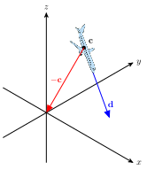
First we translate by \(-\mathbf{c}\) so that the centre of the plane is at the origin.
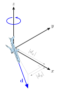
Fig. 41 Rotate \(\mathbf{d}\) about the \(z\)-axis.#
Now we need to consider which rotations we apply so that \(\mathbf{d}\) points along one of the axes. This decision is arbitrary but in this case since \(d_x\) is positive then rotating so that \(\mathbf{d}\) points along the \(x\) axis would require the fewest rotations. Looking at Fig. 41 this means can first rotate anti-clockwise about the \(z\) axis by angle \(\phi\) so that \(\mathbf{d}\) is in the \(xz\) plane. The values of \(\cos(\phi)\) and \(\sin(\phi)\) are
so the transformation matrix is
We can check whether this rotation is correct by multiplying it by the homogeneous form of \(\mathbf{d}\)
Since \(d_y = 0\) then the rotated \(\mathbf{d}\) vector is now in the \(xz\) plane.
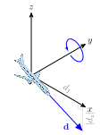
Fig. 42 Rotate \(\mathbf{d}\) about the \(y\) axis.#
Looking at Fig. 41 we need to rotate clockwise around the \(y\) axis by angle \(\psi\) so that \(\mathbf{d}\) points along the \(x\) axis (remember that the direction of rotation is based on the view looking down the axis towards the origin). The values of \(\cos(\psi)\) and \(\sin(\psi)\) are
so the transformation matrix is
Again, we can check whether this rotation is correct by multiplying it by \(R_y(\psi) \cdot R_z(\phi) \cdot \mathbf{d}\)
Since \(d_y=0\), \(d_z=0\) and \(d_x > 0\) then \(\mathbf{d}\) is now pointing along the \(x\) axis.
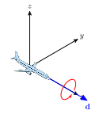
Fig. 43 Rotate \(\mathbf{d}\) about the \(x\) axis.#
Now we perform the rotation anti-clockwise around the \(x\) axis by angle \(\theta = \pi / 6\) and the matrix for achieving this rotation is
The rotations about the \(y\) and \(z\) axis and the translation are reversed so the complete composite matrix is
where